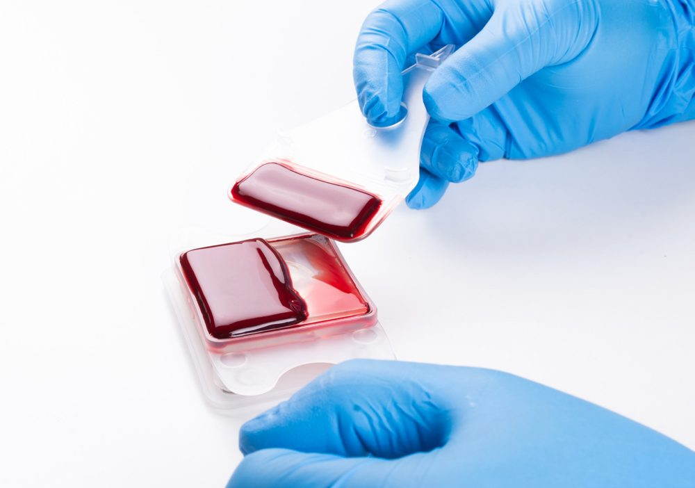
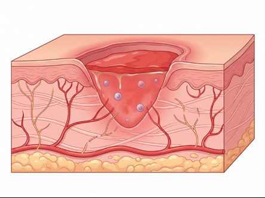
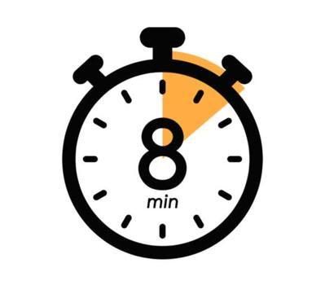
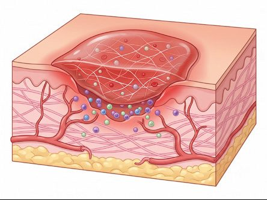
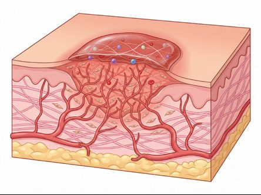

mimiX AWC
FastSkin® Patch
An autologous whole blood clot made at the bedside in minutes, with no centrifuge and no capital equipment.

Complete closure at 12 weeks. Mean area closure 94.49% vs 62.31%.
IRB-approved prospective pilot mimixCP-01v1, USA 2025, as reported by mimiX AWC. No device-related adverse events reported.Cases
Diabetic foot ulcer cases from the pilot
Swipe through cases →
Case 004-005: DFU
Healed in 8 weeks; 6 applications.
Case 004-003: DFU
Healed in 10 weeks.
Case 002-008: DFU
Healed in 6 weeks; 5 applications.
Case 004-004: DFU
Healed in 12 weeks.
De-identified case photos from mimiX AWC materials. Manufacturer-approved for internal Resource Hub use; patient consent confirmation pending.
How it works
Blood to patch in about 20 minutes
Swipe →

Draw
About 20 mL of the patient's whole blood.

Clot
Mixed with kaolin and calcium gluconate; clot forms in about 8 minutes in the cartridge.

Apply
Clot placed on the wound under a non-adherent dressing.

Scaffold
Clot provides a fibrin scaffold with the patient's own blood cells.
Illustrations from mimiX AWC brochure and IFU. Calcium gluconate is Rx and not included in the kit.
Practice fit
Intended use and workflow
FDA status and indication510(k) BK251174
- Class II device, 21 CFR 864.9245, product code PMQ
- Indication: point-of-care whole blood clot for exuding cutaneous wounds such as leg, pressure and diabetic ulcers and debrided wounds
CoverageMedicare NCD 270.3
- G0465 (diabetic wounds, 20 weeks under NCD 270.3) and G0460 (non-diabetic, MAC determined), per mimiX reimbursement guide
- Verify with your MAC and payer
FastSkin vs AurixNot interchangeable
- FastSkin: whole blood clot (red cells, white cells, fibrin), no centrifuge, no bovine thrombin, small 2025 pilot
- Aurix: platelet-rich plasma gel, centrifuge system, bovine thrombin, randomized trial evidence
- Both use the same G-codes under NCD 270.3
Source documentsmimiX materials used
- FDA 510(k) Summary BK251174
- FastSkin Patch IFU
- Co-branded brochure V4
- FastSkin Reimbursement Guide
- VAC pack (Nov 2025): pilot data and case appendix only
Contact
Invite Sheridan into your practice
Sheridan can visit your practice, walk your staff through ordering, and stay your point of contact. Tap the button below to text Abiad.
Please do not include patient information in text messages.